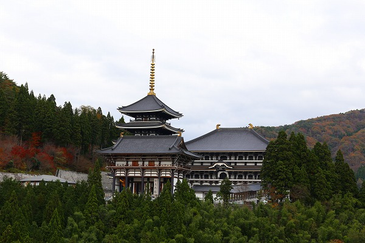
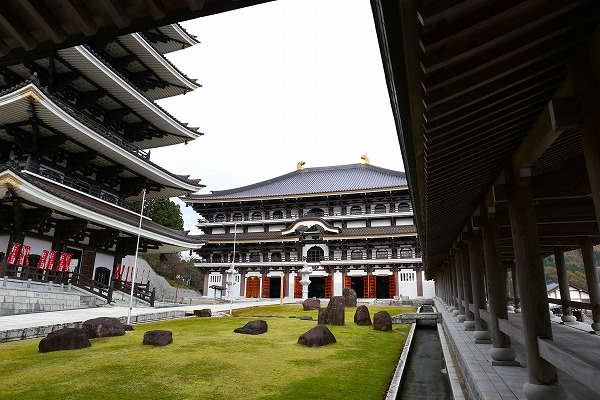
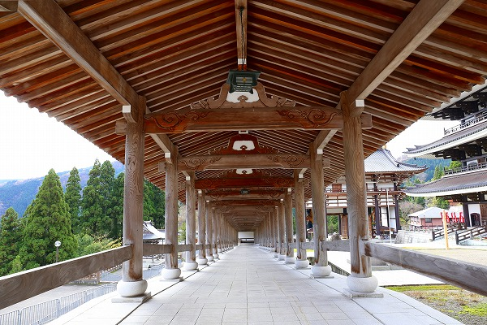

関西で偶々一日ぽっかりと予定が空いてしまった。
さあ、どうしよう？
よし。今日は一日かけて以前から見たかった
但馬大仏に行ってみよう！
但馬大仏は兵庫県の北西部、香美町（旧村岡町）にある。
日本全国のほとんどの大仏を訪問していると自負する不肖私、しかし
この大仏だけは中々訪れることが出来ないでいた。
今までこの大仏に行かなかったのは…
1.他に寄るところが何もない
2.どこから言っても恐ろしく遠い
…という解かりやす過ぎる理由から訪問の機会を逸していたのである。
神戸近郊でレンタカーを借りていざ出陣！
しかしここで初めて
兵庫県の大きさを身をもって知ることになる。
同じ県内なのに高速使っても3時間。
走れど走れど中々近づけない。
激安レンタカーだったので、ナビもオーディオもなし、AMラジオのみ。スマホも当時はオモチャみたいな性能だった。
もちろんラジオは圏外。
仕方ないので長いドライブの間、お気に入りのナンバーをずーっと独りで絶唱してましよ！
で、そろそろ唄のレパートリーと体力と気力が尽きかけてきた頃、ようやく香美町に着いた。長かったぜ。

で、但馬大仏である。
集落を見下ろすように山の上に巨大な堂宇が聳えている。
まるで戦国時代の山城のようだ。

外から見る限り主な建物は
山門、
五重塔、そして
大仏殿。
駐車場から山門を見る。
手前に駐車してある車のサイズからその大きさを想像していただきたい。
すげえデカいです。車でも通れそうです（通れないけど）。
山門の中におわす
仁王様もデカい。
しかもめっちゃカラフル！
横に回って見てみたら背中は二本の棒で支えられているのね。
気を取り直して境内に入る。

正面に大仏殿。
左手に五重塔。
右手に回廊がある。
大仏殿。
奈良の大仏殿によく似ている。
それ以上に似ているのが
越前大仏の大仏殿。

（↑越前大仏大仏殿）
それもそのはず、この但馬大仏は越前大仏と同じタクシー王こと相互タクシーの創業者である
多田氏によって建立された大仏なのだ。
ここで越前大仏と但馬大仏のスペック比較をしてみよう。
|
但馬大仏（兵庫県） |
越前大仏（福井県） |
| 建立 |
平成6（19994）年 |
昭和62（1987）年 |
| 高さ |
15.8ｍ |
17ｍ |
| 五重塔高さ |
70m |
75ｍ |
どうみても
越前大仏の弟分、といった感じ。
心なしか大仏殿も一層分少ない感じがする。
それでも相当立派な大仏殿である。
おおおお、扉の向こうに大仏さんが見えてるじゃないの。
我慢できない！
お邪魔しまーす！
おおお、グレイト！
ここの大仏は何と三体あるのですよ。
中央の
釈迦如来が15.8ｍ、左の
阿弥陀仏が15.2ｍ、右の
薬師如来が15.2ｍ。
いずれも奈良の大仏級。
チョット凄くないですか？
しかも
ほぼ貸し切りでこの巨大な三尊仏と対峙できるのだ。
何という贅沢だろう。
よく台湾に行くと三体の大仏が並んでいるお寺を見かけるが日本では珍しい。
特にこのサイズだと多分他にはないんじゃないかな。ありましたっけ？ないよね。
壁面には越前大仏同様、石仏がズラリと安置されている。
その数
806体！
お釈迦様の光背には更に仏様がピンバッジのように付いている。
本尊の背後にも沢山の石仏が並んでいる。
大仏殿の裏には薬師堂があった。
どうもこちらが本堂のようだ。
おお、普通に普通だ。
大仏殿の背後。
再び三大仏におののく。
金箔だけでも相当の量でしょうなあ。
この日お会いした参拝者は5人ほど。
正月には大勢の人が訪れるというが、これだけ凄い大仏がある割には参拝客が少ない印象だった。
まあ、場所が場所だけに仕方ないですね。

回廊。越前大仏のデジャヴ感が半端ない。
五重塔に向かう。
大仏殿の脇には大仏を建立した多田氏の胸像が。
大仏殿を見つめる多田氏像。
色々と言う人も多いかと思うが、私は
こういう「いてまえ！いてまえ！いてこましたらんかい～！」的な人がいなかったら（いや、そういう人かどうかは判らんが）日本の大仏などひとつも生まれなかったんじゃないかと思う。
何度も言うが今どきのビジネスで成功した人達がいくら金儲けしても大仏建てないでしょ？
多分お金の稼ぎ方の違いもあるが、お金の使い方の概念も変わっちゃったんでしょうねえ。
五重塔。
日本で二番目に高い五重塔。
一番は越前大仏にある五重塔。
しかしこの塔にはエレベーターはない。
越前大仏同様軒裏が真っ白。
ここにも大理石の玉仏が。
階上から見る大仏殿。
これはこれでカッコいい。
屋根も奈良っぽい。
塔にある三尊仏。
こちらは中央が釈迦如来、左が阿弥陀仏、右が大日如来となっている。
階上からの眺め。

小高い山の上に石垣が見える。
実はココ、但馬大仏を建立した多田氏が
お城も建てちゃおう！と石垣を組んでみたのだとか。
ところが組んだ石垣からだとあまり大きな城が建てられないことが判明したので、
止めちゃったのだという。
何とも豪快なハナシではないか。
ちなみにかつては国道から但馬大仏に分岐する交差点に結構な大きさの
ハリボテの看板大仏もあったらしい。
今はその痕跡すらないが、多田氏の豪快さが垣間見られるエピソードである。
参照；
日本すきま漫遊記